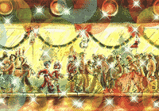
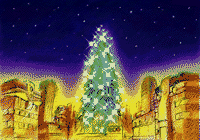
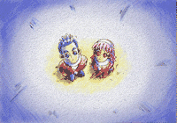

そして、二人の住んでいるツインシーズの街に 街はとてもにぎわっていました。
素敵なツリーにエリオットとクラリスはすっか エリオットとクラリスはタワーの天辺を何も言 すると…。 そう！ナイツが大きなクリスマスケーキの上で微笑みかけています。 「さてと！さっさとイデアを奪い返して、ギルウイングが隠した星を奪い返すか！」
エリオットとクラリスがナイツに出会ってから
約半年の月日が流れました。
も雪の降る季節になりました。
二人は言葉ではいえないけれど、なにか物足り
ないような気分でとぼとぼ歩いていました。
知らず知らずのうちに、二人は、街の中心にそ
びえたつシーズタワーに向かっていました。


クリスマスの飾り付けのしてあるタワーは、ま
るで大きなクリスマスツリーのようです。
り心を奪われてしまいました。
ところが、ふと、このツリーに何かが欠けてい
ることに二人は気づきました。
そう。それはツリーの天辺を飾るはずの輝く星
です。
わず見つめていました。
そんな日の夜、二人は夢の中で、いつか来た懐
かしい場所を訪れていました。
少し違っているのは、春の草原だった場所に今
は雪が降りつもり、
ナイトピアンが楽しそうにクリスマスの飾り付
けを行なっていることです。
クリスマスの風景に見とれているのも束の間、
再びナイトメアンにイデアを奪われてしまいま
す。
ナイトメアンは、まだ飾り付けがされていない
ツリーにイデアを閉じ込めてしまいました。
空中には飾り付け用のカラーチップがふわふわ
と浮き、ツリーがくるくるとまわっています。

「オレの力が必要みたいだな！」
歩み寄ると、ナイツと同化して大空高く舞い上がりました。
「星！？」
「そうさ！あのでっかいツリーに飾るはずのお前たちの“星”さ！！」
(c)SEGA 1996
このページはソニックチームが制作しています。

戻る